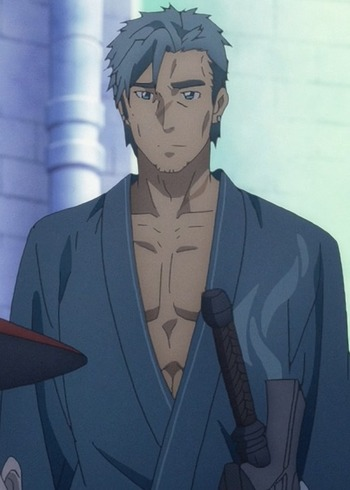
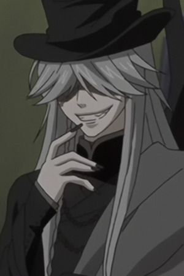
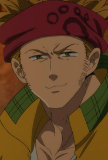

|
Akira Hayama |
- Food Wars!
- Food Wars! OVA
- Food Wars! The Second Plate
- Food Wars! The Second Plate OVA
- Food Wars! The Third Plate
- Food Wars! The Third Plate: Totsuki Train Arc
- Food Wars! The Fourth Plate
|
Akira Hayama is a 92nd Tootsuki Generation and Jun Shiomi's assistant. He is quite the knowledge of usage of spices and is well known for sense of smell and mastery of aroma. He is confident and calm. |
 |
Archer |
- Fate/stay Night
- Fate/stay Night Movie: Unlimited Blade Works
- Fate/stay Night TV Reproduction
- Carnival Phantasm
- Carnival Phantasm: Illya-jou
- Fate/stay night: Unlimited Blade Works - Prologue
- Fate/stay Night: Unlimited Blade Works
- Fate/stay Night: Unlimited Blade Works 2nd Season
- Fate/stay Night Movie: Heavan's Feel - I. Presage Flower
|
Archer is the servant of th archer class. He is the servant of Rin Toosaka. He is sarcastic and cynical but has a dark personality. He is skilled with bows and arrows. |
|  |
Bercouli |
- Sword Art Online: Alicization
- Sword Art Online: Alicization - Recollection
- Sword Art Online: Alicization - War of Underworld
|
Bercouli is one of the founders or Rulid Village, the Knight Leader of the Integrity Knights, and the oldest Integrity Knight. Bercouli is an extremely self-confident and prideful man due to his impressive level concentration. |
 |
Freed Justine |
- Fairy Tail
- Fairy Tail OVA
- Fairy Tail the Movie: Phoenix Priestess
- Fairy Tail (2014)
- Fairy Tail OVA (2016)
- Fairy Tail: Final Season
|
Freed Justine is a mage for the guild, Fairy Tail. He does not show his face often. He is the captain of the Raijinshuu, Laxus personal bodyguards. His magic style is Enchantments. He is loyal but quiet. |
 |
Reim Lunettes |
|
Reim Lunettes is a member of Pandora. Since he is a nervous guy, Break mock him most of the time. He is caring and percptive about Break and Sharon. |
 |
Saber of Black |
|
Saber of Black is the servant of Gordes Musik Yggmillennia as part of the Black Faction in the Turifas Holy Grail War. His true name is Siegfried, the Dragon-Blooded Knight. He is know for killing evil dragon Fafnir and has an invincible body. His personality is one of a noble knight. |
 |
Seth Noel |
|
Seth Noel is an auctioneer working at the Black Market. He works with Elias Ainsworth. |
|  |
Undertaker |
- Black Butler
- Black Butler: His Bulter, Performer
- Black Butler 2
- Black Butler 2 Specials
- Black Butler Picture Drama
- Black Butler: Book of Circus
- Black Butler: Book of Murder
- Black Butler: Book of the Altantic
|
Undertaker is a mysterious man whose scarred face is never fully visibe beneath his long hair. He tends to punctuate his words with sweeping gesture and creedy giggles. He spends a considerate deal of time inside of coffins. |
 |
Victor Nikiforov |
- Yuri!!! on Ice
- Yuri!!! on Ice Movie: Ice Adolescence
|
Victor Nikiforov is a Russian figure skater. He is a five-peat champion of the World Championship. Victor has a charismatic personality. He does not lose his temper. He can be an airhead sometimes but very self-aware. |
|  |
Zhivago |
- The Seven Deadly Sins: Revival of The Commandments
|
Zhivago is a werewolf who was imprisoned at the Aberdeen Prison. He is the one who raised Ban in his youth and teach him how to be a thief. He is caring, moral and kind man. He cares about his own son and Ban. |


.jpg)